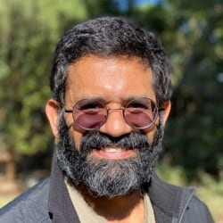

Our Team

Xi Yin (Harvard)
Shai Chester (Imperial College London)
Liam McAllister (Cornell)
Ashoke Sen (ICTS-TIFR)
Rajesh Gopakumar (ICTS-TIFR)
Nathan Berkovits (Sao Paulo IFT)
Lara B. Anderson (Virginia Tech)
Juan Maldacena (IAS)
Henry Lin (Princeton)
Silviu S. Pufu (Princeton)

Mukund Rangamani (UC Davis)
Mukund Rangamani (UC Davis)
Lorenz Eberhardt (University of Amsterdam)
Luis Fernando Alday (Oxford)
Douglas Stanford (Stanford)
Aron Wall (Cambridge)